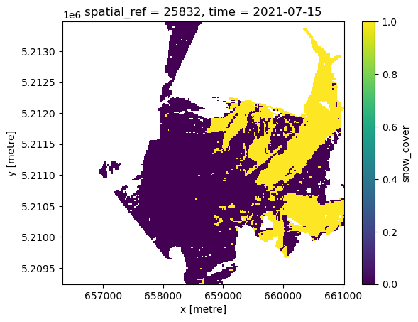

import xarray as xr
import rioxarray
from rasterio.enums import Resampling
from odc.algo import xr_reproject
from odc.geo.geobox import GeoBox as GeoBox_, BoundingBox
from datacube.utils.geometry import GeoBox
from affine import AffineDask-backed (lazy) resampling
xarray
Example on how to spatially resample a xarray Dataset or DataArray with dask using odc.algo.xr_reproject
def webcam_to_01(snow_cover: xr.DataArray):
return xr.where(snow_cover == 2, 0, snow_cover)ds_webcam = xr.open_zarr("./data/webcam_snow_cover.zarr")ds_webcam<xarray.Dataset> Size: 160MB
Dimensions: (time: 1, y: 4250, x: 4700)
Coordinates:
* time (time) datetime64[ns] 8B 2021-07-15
* x (x) float64 38kB 6.563e+05 6.563e+05 ... 6.61e+05 6.61e+05
* y (y) float64 34kB 5.213e+06 5.213e+06 ... 5.209e+06 5.209e+06
Data variables:
snow_cover (time, y, x) float64 160MB dask.array<chunksize=(1, 1024, 1024), meta=np.ndarray>
spatial_ref int64 8B ...Needs of odc.algo.xr_reproject
Function signature
def xr_reproject(
src: DataArray | Dataset,
geobox: GeoBox,
resampling: str = "nearest",
chunks: Tuple[int, int] | None = None,
dst_nodata: NodataType | None = None,
**kwargs: Unknown
) -> (DataArray | Dataset)Gotchas
geobox: GeoBoxis adatacube.utils.geometrynot aodc.geo.geobox: this needs to be constructed first (see notes below)- any
src: DataArray | Datasetneeds to have a.odc.geoboxand.odc.crsattribute.
Construction of a geobox
xmin, xmax = 656320.0, 661020.0
ymax, ymin = 5213480.0, 5209240.0lower_res = 20 # target resolution in metersVersion 1
width = int((xmax - xmin) / lower_res)
height = int((ymax - ymin) / lower_res)
geobox = GeoBox(
width=width,
height=height,
affine=Affine(lower_res, 0.0, xmin, 0.0, lower_res * -1, ymax),
crs="epsg:25832",
)Version 2
bbox = BoundingBox(left=xmin, top=ymax, bottom=ymin, right=xmax)
geobox_ = GeoBox_.from_bbox(bbox=bbox, crs=25832, resolution=lower_res)
geobox_2 = GeoBox(
width=geobox_.width, height=geobox_.height, affine=geobox_.affine, crs="epsg:25832"
)geobox_2 = GeoBox(
width=geobox_.width, height=geobox_.height, affine=geobox_.affine, crs="epsg:25832"
)assert geobox == geobox_2Perform computation on dataset - this often leads to some part of the spatial ref getting lost…
# snow cover as 0 and 1
snow_cover = webcam_to_01(ds_webcam.snow_cover)Setting crs for spatial_ref
if snow_cover.odc.geobox.crs is None:
print("Dataset's missing the crs")Dataset's missing the crs# this makes .spatial_ref and .geobox available (actually .geobox is added by datacube)
# (not sufficient anymore)
# snow_cover.rio.write_crs("epsg:25832", inplace=True)# (not sufficient anymore)
# snow_cover["spatial_ref"] = ds_webcam.spatial_refsnow_cover = snow_cover.odc.assign_crs(25832)assert snow_cover.odc.crsPerform actual resampling
snow_cover_downsampled = xr_reproject(snow_cover, geobox, resampling=Resampling.mode)snow_cover_downsampled.plot()<matplotlib.collections.QuadMesh at 0x7166d43f1010>